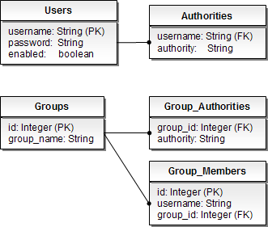

Section Summary: Storing user details in a relational database using DaoAuthenticationProvider
Introduction
Spring's Security DaoAuthenticationProvider is a simple authentication provider that uses a fData Access Object (DAO) to retrieve user information from a relational database. It leverages a UserDetailsService (as a DAO) in order to lookup the username, password and GrantedAuthority s. It authenticates the user simply by comparing the password submitted in a UsernamePasswordAuthenticationToken against the one loaded by the UserDetailsService.
Configuring the provider is quite simple:
<bean id="daoAuthenticationProvider" class="org.springframework.security.authentication.dao.DaoAuthenticationProvider"> <property name="userDetailsService" ref="daoUserDetailsService" /> </bean>
In addition, you can optionally configure a PasswordEncoder and a SaltSource. A PasswordEncoder provides encoding and decoding of passwords presented in the UserDetails object that is returned from the configured UserDetailsService. A SaltSource enables the passwords to be populated with a "salt", which enhances the security of the passwords in the authentication repository. For more details, refer to Spring Security reference.
Using an in-memory DAO
Spring Security comes with InMemoryDaoImpl, an implementation of UserDetailsService that draws its user information from its Spring configuration. This is perfect when just starting to integrate Spring Security. Here's an example of how you may configure an InMemoryDaoImpl in Spring configuration file:
<bean id="daoUserDetailsService" class="org.springframework.security.core.userdetails.memory.InMemoryDaoImpl"> <property name="userMap"> <value> Edward = koala, SpacePrivilege READ ClassFilter eg.cinema.Movie, SpacePrivilege READ ClassFilter eg.cinema.Seat, SpacePrivilege WRITE ClassFilter eg.cinema.Seat Arthur = goanna, SpacePrivilege READ ClassFilter eg.cinema.Movie, SpacePrivilege READ ClassFilter eg.cinema.Seat, SpacePrivilege WRITE ClassFilter eg.cinema.Seat Emily = kangaroo, GridPrivilege MANAGE_GRID, GridPrivilege MANAGE_PU, GridPrivilege PROVISION_PU, SpacePrivilege READ PackageFilter eg.cinema </value> </property> </bean> * Simpler option is to use the user-service element from the Spring's security namespace.
The userMap property defines a set of usernames, passwords and privileges. On each line is a username, a password followed by a comma separated list of one or more authorities to be granted to the user.
Consider Edward, a Box-Office Employee, which has privileges to list all movies and their available seats, and to reserve a seat. Edward is granted READ privileges for class eg.cinema.Movie and for class eg.cinema.Seat, and WRITE privileges to update a eg.cinema.Seat as reserved. Of course, this can get quite cumbersome for production use.
| This Spring Security configuration file can be found under <GigaSpaces root>/config/security/in-memory-security-config.xml |
Declaring a JDBC DAO
Spring Security also includes JdbcDaoImpl, a UserDetailsService that can obtain authentication information from a JDBC data source. It can be declared in the Spring configuration file as follows:
<bean id="daoUserDetailsService" class="org.springframework.security.core.userdetails.jdbc.JdbcDaoImpl"> <property name="dataSource" ref="jdbcDataSource" /> </bean> <bean id="jdbcDataSource" class="org.springframework.jdbc.datasource.SimpleDriverDataSource"> <property name="driverClass" value="org.hsqldb.jdbcDriver" /> <property name="url" value="jdbc:hsqldb:hsql://localhost:9001" /> </bean>
There are some basic assumptions on how user information is stored in the database. Specifically, it assumes a Users table and an Authorities table. By default, JdbcDaoImpl loads the authorities for a single user with the assumption that the authorities are mapped directly to users. An alternative approach is to partition the authorities into groups (roles) and assign groups to the user. For more information, refer to the JdbcDaoImpl Javadoc and the Security Database Schema Appendix.
Here is a snippet:
create table users(
username varchar_ignorecase(50) not null primary key,
password varchar_ignorecase(50) not null,
enabled boolean not null);
create table authorities (
username varchar_ignorecase(50) not null,
authority varchar_ignorecase(50) not null,
constraint fk_authorities_users foreign key(username) references users(username));
create unique index ix_auth_username on authorities (username,authority);
---
Group Authorities (if enabled)
create table groups (
id bigint generated by default as identity(start with 0) primary key,
group_name varchar_ignorecase(50) not null);
create table group_authorities (
group_id bigint not null,
authority varchar(50) not null,
constraint fk_group_authorities_group foreign key(group_id) references groups(id));
create table group_members (
id bigint generated by default as identity(start with 0) primary key,
username varchar(50) not null,
group_id bigint not null,
constraint fk_group_members_group foreign key(group_id) references groups(id));
The illustration below represents the table structures assumed by JdbcDaoImpl and an example table data holding our "Box-Office" users and roles. If you are not using groups (roles) then a users table and an authorities table will do.
Edward, Arthur and Thomas are all "Box-Office employees" which share this common role, with privileges to list all movies and their available seats, and to reserve a seat. On the other hand, Thomas is also a "Box-Office Manager", with privileges to setup a new movie and remove old movies. Emily, is a "Box-Office Administrator" who is responsible for setting up the "Box-Office" application, and also has (non-role) privileges to read and write all data related to the cinema.
|
The database tables assumed by JdbcDaoImpl  |
Box-Office users and roles
|

To use JdbcDaoImpl, you might need to configure it to find the user information in regards to your database schema (assuming it is different from the default). By setting the usersByUsernameQuery, authoritiesByUsernameQuery, and groupAuthoritiesByUsernameQuery you can configure the JdbcDaoImpl to retrieve the user information and granted authorities based on your database schema.
When JdbcDaoImpl looks up user information, it will query with the following SQL:
SELECT username,password,enabled FROM users WHERE username = ?
You may have noticed that we omitted the 'enabled' column in our example Users table. For this to work, we need to change the usersByUsernameQuery to return 'true' for the 'enabled' column value. Likewise, you would set the query to suite your needs.
<bean id="daoUserDetailsService" class="org.springframework.security.core.userdetails.jdbc.JdbcDaoImpl"> <property name="dataSource" ref="jdbcDataSource" /> <property name="usersByUsernameQuery"> <value>SELECT username,password,'true' FROM users WHERE username = ?</value> </property> ... </bean>
| This Spring Security configuration file can be found under <GigaSpaces root>/config/security/jdbc-security-config.xml |
Working with encrypted passwords
Spring Security's PasswordEncoder interface is used to support the use of passwords which are encoded in some way in persistent storage. This will normally mean that the passwords are "hashed" using a digest algorithm such as MD5 or SHA.
By default, the DaoAuthenticationProvider uses the PlaintextPasswordEncoder, which means that the password is left unencoded. Here is how to wire DaoAuthenticationProvider to use MD5 encoding:
<bean id="daoAuthenticationProvider" class="org.springframework.security.authentication.dao.DaoAuthenticationProvider"> <property name="userDetailsService" ref="daoUserDetailsService" /> <property name="passwordEncoder"> <bean class="org.springframework.security.authentication.encoding.Md5PasswordEncoder" /> </property> </bean>
You can also set a salt source for the encoder. For more information, refer to Spring Security reference.
By now you should be familiar with some important concepts:
- Setting up a Spring-based security bridge with a simple in-memory DAO or a relational database,
- Defining privileges for a user, configure a password encoder,
- Test a standalone security bridge against your configuration,
- Launch a simple GigaSpaces instance with a Spring Security back-end.